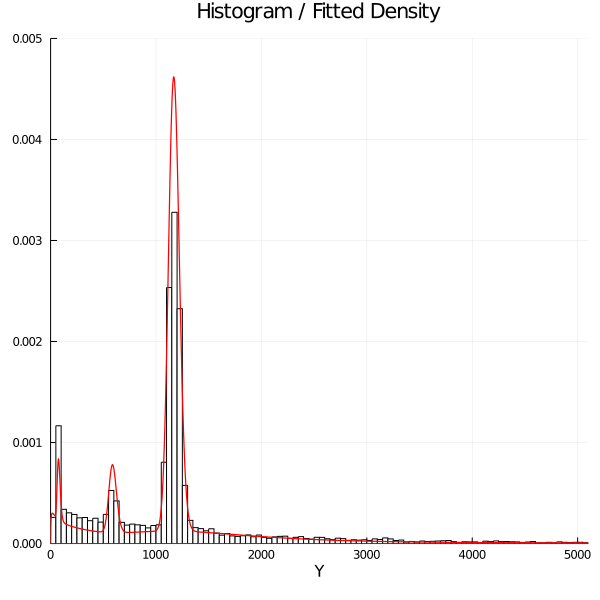

Mixture-of-Experts Models for Claim Frequency and Severity
CAS RPM, March 15, 2023, San Diego CA
PhD Candidate, University of Toronto
Overview
We propose a flexible Mixture-of-Experts (MoE) framework for modelling claim frequency and severity, and for ratemaking, reserving and risk selection.
We showcase a few case studies to demonstrate the flexibility and wide applicability of the framework.
Our model has been implemented in Julia and R as open-source packages, readily available for a variety of applications.
Joint work by the actuarial science research group at the University of Toronto: Spark Tseung, Prof. Tsz Chai (Samson) Fung, Prof. Andrei Badescu, and Prof. X. Sheldon Lin.
Visit https://actsci.utstat.utoronto.ca/ for more!
Motivation
Actuaries: GLM Is Great!
GLM is simple yet powerful.
GLM is easy to implement.
GLM is interpretable and accessible.
However, GLM can fail miserably in insurance applications, because real data do not satisfy GLM assumptions.
GLM Fails when…
Claim frequency distribution is zero-inflated.
There is an excess probability of zero claims.
Example: Australian auto insurance data (ausprivauto040) in CASDatasets (Dutang and Charpentier 2020), GLM fit vs. empirical.
GLM Fails when…
Claim severity distribution is multimodal and/or heavy-tailed.
Observations are censored and/or truncated.
Example: French auto insurance data (freMTPLsev) in CASDatasets (Dutang and Charpentier 2020).
Insurance Data Are Heterogeneous
- Policyholders’ risk profiles are different even within the same portfolio of, e.g. auto insurance or home insurance.
- One way to capture such heterogeneity is to use a mixture model.
Example: Modelling claim frequency with a 3-component Poisson mixture.
Covariates Are Important
- Policyholders’ information, or covariates, are predictive of their risk profiles.
- We may use regression to classify policyholders into different risk groups, and model each of these more homogeneous groups separately.
Example: A Poisson mixture model combined with logistic regression.
MoE = Regression + Mixture
Here is an example on how to incorporate covariates into the Mixture-of-Experts (MoE) framework.
- Based on the covariates, we first classify policyholders into different latent risk groups with a logistic regression.
- Within each risk group, we model the response (frequency or severity) with an appropriate distribution.
MoE: Flexible and Powerful
- The MoE framework can catch three patterns: regression, dependence, and distributional.
- For example, it offers a much better fit to data compared with GLM, as it can capture the nonlinear relationship between covariates and losses.
Example: Australian auto insurance data (ausprivauto040) in CASDatasets (Dutang and Charpentier 2020). Analyzed in (Badescu et al. 2021), LRMoE provides a better fit than GLM.
MoE: Flexible and Powerful
Example: French auto insurance data (freMTPLsev) in CASDatasets (Dutang and Charpentier 2020). Analyzed in (Tseung et al. 2021), LRMoE can provide good fit to data exhibiting multimodality.

A Crash Course on (LR)MoE
Model Setup
Let \(\mathbf{x}_{i} = (x_{i0}, x_{i1}, \dots, x_{iP})^{T}\) denote the covariates for policyholder \(i\) for \(i=1, 2, \dots, n\).
Based on the covariates, policyholder \(i\) is classified into one of \(g\) latent risk classes by a logit gating function \[ \pi_{j}(\mathbf{x}_{i}; \mathbf{\alpha}_{j}) = \frac{\exp(\sum_{k=0}^{P} \alpha_{jk} x_{ik})}{\sum_{j^{\prime}=1}^{g} \exp(\sum_{k^=0}^{P} \alpha_{j^{\prime}k} x_{ik}) }, \quad j = 1, 2, \dots, g, \] where \(\mathbf{\alpha}_{j} = (\alpha_{j0}, \alpha_{j1}, \dots, \alpha_{jP})^{T}\) are the regression coefficients for latent class \(j\).
Given the assignment of latent class \(j \in \{ 1, 2, \dots, g \}\), the response variables \(\mathbf{y}_{i}\) are modelled by an expert distribution function \(f_j(\mathbf{y}_{i}; \mathbf{\varphi}_j)\) with parameters \(\mathbf{\varphi}_j\). Note that it does not depend on the covariates.
Example: 3-Component LRMoE
Simpler, Still Powerful
While our LRMoE framework is simpler (does not consider covariates in the distribution function), it is still flexible and powerful.
Formally speaking (Fung, Badescu, and Lin 2019b),
- LRMoE is dense in the class of (univariate and multivariate) frequency and severity distributions.
- LRMoE is theoretically guaranteed to be flexible and powerful!
Indeed, actuaries may prefer simpler models (like LRMoE) in practice for their interpretability and ease of implementation.
Other advantages: (easier) estimation, tail-catching, capture multi-modality and dependency
Applications in Actuarial Modelling
Overview
We will consider several applications of LRMoE on real insurance data.
We aim to demonstrate the following desirable features and potential use cases of our framework for actuarial modelling.
Fitting both frequency and severity data with much better results.
Modelling correlated claim frequency in a single framework.
Dealing with censored/truncated data due to policy limits/deductibles.
Extending to other problems such as insurance risk selection, claims reserving and IBNR prediction.
1. Frequency and Severity
Our introductory examples on the Australian (ausprivauto040) and French (freMTPLsev) auto insurance datasets have already demonstrated the superior fitting performance of LRMoE compared to GLM.
- Australian: 3 components of Poisson
- French: 6 components of zero-inflated Lognormal
Question: What expert functions (distributions) should one use?
Theory vs Practice
In theory, LRMoE is flexible with suitable choices of expert functions.
Our (software?) currently supports:
- Frequency: Binomial, Negative Binomial, Poisson, Gamma Count
- Severity: Burr, Gamma, Inverse Gaussian, Lognormal, Weibull
- …and the zero-inflated version of all of the above!
In practice, the choice of expert functions depends on the following:
- Preliminary Analysis: Let the dataset speak for itself.
- Domain Knowledge: Models are more powerful when combined with actuaries’ discretion.
- Trial and Error: It never hurts to do some experimentation!
- Computational Constraints: Sometimes it may be worthwhile to sacrifice some fitting performance for a faster workflow.
2. Modelling Correlated Claims Frequency
(Fung, Badescu, and Lin 2019a) considers fitting LRMoE to the claim frequency of two correlated lines: Third-Party Liability (TPL) and Car Damages (CD).
We consider a European major insurer’s portfolio with 18k policyholders.
Empirically, the two coverages are correlated with Kendall’s \(\tau\) = 0.241, so it may not be appropriate to assume independence.
CD coverage is over-dispersed, and both TPL and CD are right-skewed and heavy-tailed, which renders Poisson a poor modelling choice.
We fit (zero-inflated, ZI-) Negative Binomial (NB) GLM as benchmark models.
We use the Erlang-Count (EC) experts for LRMoE, which will make our model theoretically flexible. Five components are used based on the Bayesian Information Criterion (BIC).
Empirical vs Fitted Distributions
LRMoE with EC experts outperforms both NB GLM and ZINB GLM in terms of fitting the chi-square statistic and the log-likelihood.
| TPL | Empirical | Fitted | CD | Empirical | Fitted | ||||||
|---|---|---|---|---|---|---|---|---|---|---|---|
| NB | ZINB | LRMoE | NB | ZINB | LRMoE | ||||||
| 0 | 16971 | 16975.06 | 16976.66 | 16965.19 | 0 | 14182 | 14177.32 | 14205.6 | 14188.88 | ||
| 1 | 991 | 972.64 | 969.88 | 1001.73 | 1 | 2499 | 2498.57 | 2386.71 | 2484.87 | ||
| 2 | 48 | 65.9 | 66.81 | 40.75 | 2 | 752 | 810.45 | 883.92 | 777.23 | ||
| 3 | 3 | 4.95 | 5.14 | 7.31 | 3 | 359 | 307.02 | 333.24 | 317.83 | ||
| 4 | 5 | 0.41 | 0.45 | 2.82 | 4 | 129 | 125.77 | 127.56 | 155.43 | ||
| 5+ | 1 | 0.04 | 0.05 | 1.2 | 5 | 66 | 54.19 | 49.51 | 64.01 | ||
| 6 | 22 | 24.22 | 19.46 | 22.04 | |||||||
| 7 | 7 | 11.15 | 7.74 | 6.52 | |||||||
| 8+ | 3 | 10.3 | 5.26 | 2.19 | |||||||
| \(\chi^2\) | 81.31 | 70.61 | 5.66 | \(\chi^2\) | 22.59 | 33.88 | 11.13 | ||||
| loglik | -4224.94 | -4213.99 | -4208.77 | loglik | -13279.18 | -13204.95 | -13178.68 |
Correlation and Higher Moments
The LRMoE model produces a fitted Kendall’s \(\tau\) = 0.240 (vs empirical value 0.241), which indicates the dependence is well captured.
Besides, LRMoE also captures the higher-order moments of the two coverages better than the benchmark models.
| TPL | Empirical | Fitted | CD | Empirical | Fitted | ||||||
|---|---|---|---|---|---|---|---|---|---|---|---|
| NB | ZINB | LRMoE | NB | ZINB | LRMoE | ||||||
| mean | 0.062 | 0.062 | 0.062 | 0.062 | mean | 0.34 | 0.34 | 0.34 | 0.34 | ||
| % diff | 0.01% | 0.00% | 0.16% | % diff | -0.01% | -0.04% | -0.01% | ||||
| variance | 0.069 | 0.068 | 0.068 | 0.069 | variance | 0.649 | 0.669 | 0.644 | 0.65 | ||
| % diff | -2.15% | -1.86% | -0.43% | % diff | 3.08% | -0.81% | 0.22% | ||||
| skewness | 5.084 | 4.522 | 4.544 | 5.096 | skewness | 3.265 | 3.672 | 3.305 | 3.261 | ||
| % diff | -11.05% | -10.62% | 0.24% | % diff | 12.45% | 1.22% | -0.13% | ||||
| kurtosis | 40.248 | 26.386 | 26.755 | 41.938 | kurtosis | 16.509 | 23.063 | 17.988 | 16.399 | ||
| % diff | -34.44% | -33.53% | 4.20% | % diff | 39.70% | 8.96% | -0.67% |
Comparing Sample Policyholders
Policyholder A: Lots of undesirable risk characteristics but no claims are observed during the contract period.
Policyholder B: An average risk profile with 1 CD claim.
Policyholder C: Relatively desirable risk characteristics but eventually had 1 TPL and 2 CD claims during the contract period.
3. Application to Risk Selection
In a working technical report, we apply risk selection approach to a real dataset from a major Canadian automobile insurer.
We consider a portfolio from 2014 to 2020.
We re-fit the LRMoE model every half year, and select the top 5% most risky policyholders to cede to a risk-sharing pool, based on
- Covariates only: using heuristic rules on covariates such as driver/vehicle age, car class, etc.
- Covariates + claim history: using the predicted mean of the response adjusted by claim history.
We compare which losses are identified and how much is saved by eliminating the losses generated by the risky policyholders.
We will see LRMoE outperforms by a huge margin!
Covariates Only
Covariates + Claim History
Comparison of Cumulative Cashflow
4. Data Censoring and Truncation
Data censoring and truncation are common in insurance data, e.g. due to policy limits and deductibles, as well as the observation times for incurred but not reported (IBNR) claims.
Parameter estimation becomes more involved when data are censored and/or truncated, but the underlying idea remains the same.
(Fung, Badescu, and Lin 2021b) first derived an algorithm for estimating the parameters of LRMoE with censored and/or truncated data, and presented two applications:
- Fitting reporting delay (censored data), and
- Ratemaking in the presense of policy deductibles (truncated data).
(Fung, Badescu, and Lin 2021a) presented a more comprehensive framework for applying LRMoE to the prediction of IBNR claims with a case study on a real dataset from a major European automobile insurer.
Software Implementations
Fitting LRMoE to Real Data
As a mixture-based model, parameter estimation for LRMoE can be done by the Expectation-Conditional-Maximization (ECM) algorithm.
(Fung, Badescu, and Lin 2019a) contains an illustration of fitting LRMoE to frequency data.
(Fung, Badescu, and Lin 2021b) focuses on estimation from censored and/or truncated data.
A general introduction to the E(C)M algorithm can be found in (Geoffrey J. McLachlan and Krishnan 2007). A general introduction to finite mixture models can be found in (Geoffrey J. McLachlan, Lee, and Rathnayake 2019).
Implementing the estimation involves some customization based on the selection of experts functions, as well as modifications based on the presence of censored and/or truncated data.
We Have Already Built the Wheels!
Our research group has developed two software packages for LRMoE, which are open-source and readily available for use on real datasets (Tseung et al. 2020) and (Tseung et al. 2021).
It is not difficult to interface with Python via packages like PyJulia (Arakaki et al. 2022) and rpy2 (github repository).
Package Highlights
Our software packages offer several new distinctive features which are motivated by various actuarial applications and mostly cannot be achieved using existing packages for mixture models.
- A wider coverage on frequency and severity distributions and their zero-inflated variants;
- The flexibility to vary classes of distributions across components;
- Parameter estimation under data censoring and truncation;
- A collection of insurance ratemaking and reserving functions; and
- Model selection and visualization tools.
While LRMoE(.jl) was initially developed for actuarial application, our packages also allow for customized expert functions for various modelling problems within and beyond the insurance context.
Live Demo!
We will see LRMoE.jl in action, including model fitting to real dataset, model comparison and interpretation.
Summary
Summary
GLM is popular with actuaries, but it may fail on complex insurance datasets.
We introduced the LRMoE framework for insurance frequency and severity data, as well as many other applications.
Our proposed model is shown to provide superior performance on various datasets and modelling problems.
We have developed two software packages for LRMoE, which are open-source and readily available for use on real applications.
Many potential extensions and applications for LRMoE are still ongoing… Keep an eye on our latest publications and presentations!
Our research group is always looking for collaborations. Please reach out to us if you have interesting and challenging problems to solve!